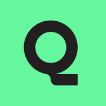

Tableros Quoota
Cobranzas y Tesorería
Abrir tableros →
📲 Tenlo como app en tu iPhone
- Toca Compartir ⬆️ (abajo en Safari).
- Elige “Agregar a inicio” y toca Agregar.
Si aparece la opción “Abrir como app web”, déjala apagada.
📲 Tenlo como app en tu Android
- Toca el menú ⋮ (arriba a la derecha en Chrome).
- Elige “Agregar a pantalla principal” o “Instalar app”.
Solo cuentas @quoota.com